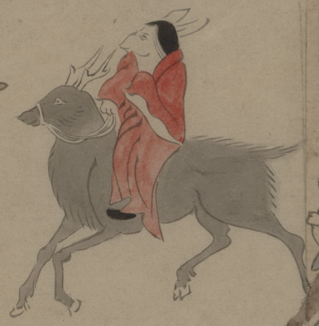

鹿に乗った兎の化物。頭から黒い髪を長く垂らしており、女とみられる。赤い衣と黒い靴を身につけて、鹿に乗り、手綱をつかんでいる。鹿も化物と思われる。
出典：親書誌：U426_nichibunken_0150：付喪神絵詞；ツクモガミエコトバ／日付：2010／資源識別子：U426_nichibunken_0150_0071_0000
Copyright (c)2010- International Research Center for Japanese Studies, Kyoto, Japan. All rights reserved.